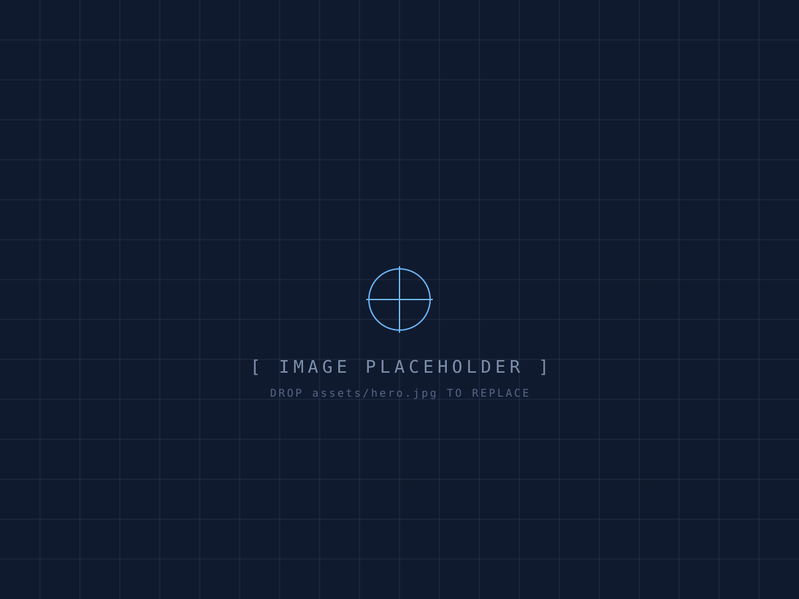

Welcome to the blog. This is a sample post to show how everything fits together — you can edit it or delete it and start fresh.
What I'll write about
Biomedical engineering, projects I'm building, things I'm reading, and the occasional deep-dive into a problem I've been chewing on.

assets/blog/ and are added with a
../ path.To publish your own, copy posts/_template.html, write your
content, and add an entry to data/posts.js. That's it.